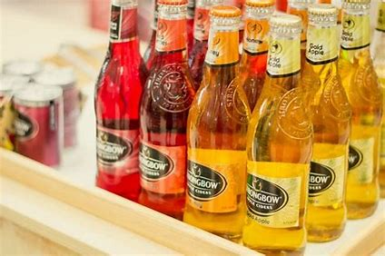

STRONGBOW LÀ GÌ MÀ KHIẾN GIỚI TRẺ PHẢI MÊ MẨN ĐẾN VẬY ?
Trong thời gian gần đây, Strongbow đang là cái tên tạo nên cơn sốt mới trong cộng đồng giới trẻ. Đó là một loại thức uống được lên men từ táo. Strongbow có một hương vị mát lạnh, hấp dẫn tất cả những ai đã từng thưởng thức dù chỉ 1 lần. Có người gọi nó là rượu, bia hay nước trái cây có cồn. Vậy thực chất Strongbow là gì mà khiến giới trẻ phải mê mẩn đến vậy ?
GIỚI THIỆU

|
Strongbow cider - nước táo lên men Cider (Apple Cider - hay nước táo lên men) là loại thức uống có nguồn gốc từ châu Âu và đã phổ biến toàn cầu từ hàng trăm năm nay. Khác với các loại thức uống có cồn khác, sự hấp dẫn của Cider được cho là nằm ở cách thức chế biến đầy ấn tượng từ quá trình lên men táo tự nhiên mang đến men say thuần khiết, hài hòa và đầy cuốn hút. Với một chút ngọt dịu, thanh mát kết hợp cùng vị chát nhẹ đặc trưng của táo cùng độ men vừa phải đủ để lâng lâng hứng khởi, Cider trở thành thức uống hội tụ đầy đủ tinh hoa một cách chọn lọc từ thiên nhiên. Strongbow Cider được biết đến như thương hiệu Cider lớn nhất thế giới. Chính thức ra mắt từ những năm 1960, song việc thừa hưởng toàn bộ tinh hoa từ hơn 120 năm của Bulmers - một trong những thương hiệu Cider lâu đời nhất - đã mang đến cho Strongbow một “bản sắc” Cider hoàn toàn khác biệt. |
|  |
Strongbow Cider có 4 hương vị Gold - (Nguyên bản): Vị táo nguyên bản, rất sảng khoái với độ ngọt dịu và hậu vị sang trọng kéo dài. Honey - (Mật ong): Vị táo cùng sự hòa quyện tinh tế của mật ong mang đến hậu vị ngọt dịu và ấn tượng. Red Berries - (Dâu đỏ): Sự kết hợp tinh tế giữa hương quả lựu, mâm xôi, quả lý và dâu tây, tạo nên loại Cider có vị ngọt của dâu đỏ hòa quyện với vị chua thanh từ táo. Elderflowers - (Hoa Elders) - Hương thơm dịu nhẹ và mùi vị mới mẻ của hoa Elders kết hợp cùng vị chát nhẹ đặc trưng của táo, tạo cảm giác đầy sảng khoái và tươi mới. |
|
Strongbow gold - táo nguyên bản Cider (Apple Gold - hay nước táo lên men) là loại thức uống có nguồn gốc từ châu Âu và đã phổ biến toàn cầu từ hàng trăm năm nay. Khác với các loại thức uống có cồn khác, sự hấp dẫn của Cider được cho là nằm ở cách thức chế biến đầy ấn tượng từ quá trình lên men táo tự nhiên mang đến men say thuần khiết, hài hòa và đầy cuốn hút. Với một chút ngọt dịu, thanh mát kết hợp cùng vị chát nhẹ đặc trưng của táo cùng độ men vừa phải đủ để lâng lâng hứng khởi, Cider trở thành thức uống hội tụ đầy đủ tinh hoa một cách chọn lọc từ thiên nhiên. Strongbow Cider được biết đến như thương hiệu Cider lớn nhất thế giới. Chính thức ra mắt từ những năm 1960, song việc thừa hưởng toàn bộ tinh hoa từ hơn 120 năm của Bulmers - một trong những thương hiệu Cider lâu đời nhất - đã mang đến cho Strongbow một “bản sắc” Cider hoàn toàn khác biệt. |